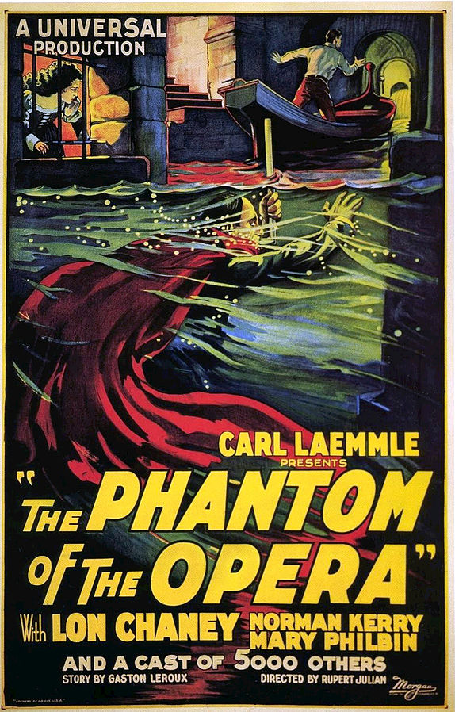
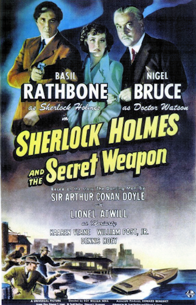

Is it a bird? Is it a plane? No its Superman!
Watch the incredible man, faster than a speeding bullet, more powerful than a locomotion in his
most challenging situations to date.
We have superman playing making his first animated appearance
By mid-1941, brothers Max and Dave Fleischer were running their own animation studio, and had recently finished their first animated feature film, Gulliver's Travels; they were also well into production on their second, Mister Bug Goes to Town. Not wanting to risk becoming overworked (which could compromise the quality of each project), the Fleischers were strongly (but quietly) opposed to the idea of committing themselves to another major project, when approached by their studio's distributor and majority owner since May 1941, Paramount Pictures. Paramount was interested in financially exploiting the phenomenal popularity of the then-new Superman comic books, by producing a series of theatrical cartoons based upon the character......
ExpandFold
Phantom of the Opera (1925)

The classic silent horror romance brought to life, one murdering at a time.
The grand Paris Opera House is so terribly haunted, but by who and what?
There will be murder, there will be mayhem, all in the name of true love.
After the performance, the ballet girls are disturbed by the sight of a mysterious man in a fez (Arthur Edmund Carewe), who dwells in the cellars. Arguing whether or not he is the Phantom, they decide to ask Joseph Buquet, a stagehand who has actually seen the ghost's face. Buquet describes a ghastly sight of a living skeleton to the girls, who are then startled by a shadow cast on the wall. The antics of stagehand Florine Papillon (Snitz Edwards) do not amuse Joseph's brother, Simon (Gibson Gowland), who chases him off. Meanwhile, Mme. Carlotta (Virginia Pearson), the prima donna of the Paris Grand Opera, barges into the managers office enraged. She has received a letter from "The Phantom," demanding that Christine sing the role of Marguerite the following night, threatening dire consequences if his demands are not met. Christine is in her dressing room at that moment, speaking to a phantom voice (which the audience sees as a shadow on a wall behind the dressing room.) The voice warns her that she will take Carlotta's place on Wednesday and that she is to think only of her career and her master.
ExpandFold
Sherlock Holmes and The Secret Weapon (1943)

Do you have an unquenchable taste for mystery? Do you have a sixth sense for crime and mystery?
Sherlock Holmes certainly does and Dr. Watson certainly do, but can they solve the Nazi Mystery?
Set against the backdrop of World War 2, watch as your two favourite crime solvers face their biggest challenge yet!
Sherlock Holmes (Basil Rathbone) pretends to be a Nazi spy to aid scientist Dr. Franz Tobel (William Post Jr.) and his new invention, a bombsight, in escaping a Gestapo trap in Switzerland. Holmes and Franz fly to London, where Holmes places him under the protection of his friend, Dr. Watson (Nigel Bruce). The scientist slips away against Holmes' instructions for a secret reunion with his fiancee, Charlotte Eberli (Kaaren Verne), and gives her an envelope containing a coded message. He tells Charlotte to give it to Holmes if anything should happen to him. Leaving Charlotte's apartment, an attempt to abduct him by German spies is foiled by a passing London bobby.
ExpandFold
Hemp For Victory (1942)
Do you love seeing US policy turn and back-flip as much as we do?
If this is the case prepare yourself for this hallmark film produced by the United State Department of Agriculture
advocating for the growth of as many hemp based products as possible.
Learn about different uses for hemp and gain an insight into how US policy can shift depending on the backdrop
of the times through this historical classic.
The film was made to encourage farmers to grow hemp for the war effort because other industrial fibers, often imported from overseas, were in short supply. The film shows a history of hemp and hemp products, how hemp is grown, and how hemp is processed into rope, cloth, cordage, and other products......